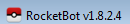
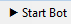
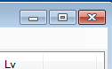

def show_desktop(): click(Pattern().targetOffset(5,12)) def launch_rocket_bot(): while not exists(): click(Pattern().targetOffset(5,12)) doubleClick() wait(,10) def click_start(): click() def close_prog(): if exists(Pattern().targetOffset(39,-21)): click(Pattern().targetOffset(39,-21)) def is_bot_dead(): ret = False if exists(): ret = True elif exists(): detect_bot_dead_null_ref_repeated() ret = True return ret def detect_bot_dead_null_ref_repeated(): danger=0 for x in xrange(1, 6): if exists(): danger+=1 sleep(1) if danger >= 3: terminate_bot(danger) def terminate_bot(danger): print("terminate_bot ... 'see Null Reference' %s times" %(danger)) show_desktop() close_prog() def play_n_minutes(N=30): import time, datetime max_retry = N*6 # 60 minutes time_start = time.time() time_end = time_start + 60*60 show_desktop() launch_rocket_bot() click_start() print("will play %s minute(s) since %s" %(N, time_start)) for x in xrange(1, max_retry): if time.time() > time_end: print("played %s minutes" %(N)) exit(0) st = datetime.datetime.fromtimestamp(time.time()).strftime('%Y-%m-%d %H:%M:%S') if is_bot_dead(): print("[%s] BOT IS DEAD" %(st)) raise Exception("bot is dead... restart") close_prog() launch_rocket_bot() click_start() else: print("[%s] had checked %s out of %s" %(st, x, max_retry)) sleep(10) pass print("finished...") close_prog() if __name__ == "__main__": params = {} iteration = params.get("iteration", 10) for i in xrange(1, iteration): try: play_n_minutes(N=30) except Exception, err: print("EXCEPTION: %s -- err: %s" %(Exception, err))